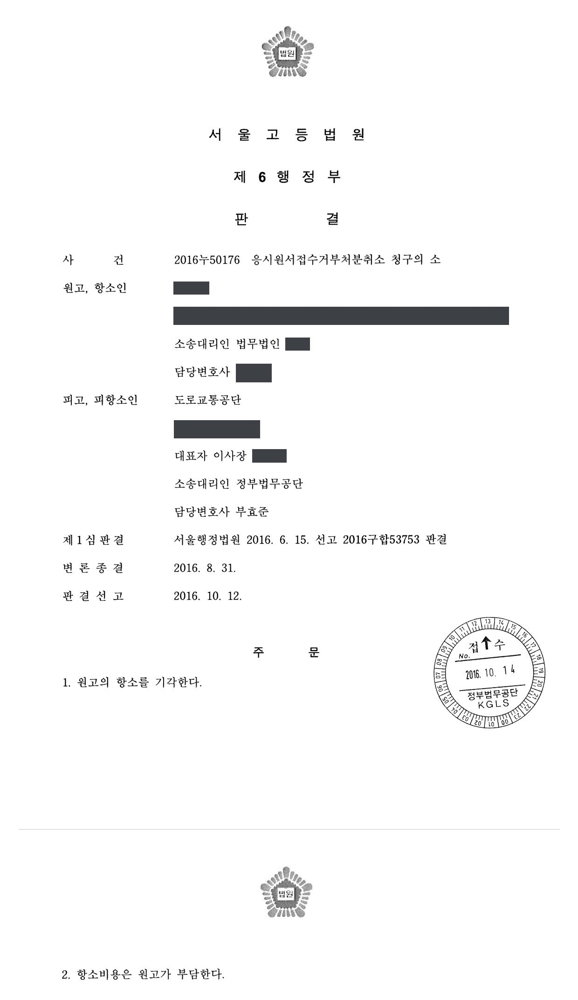
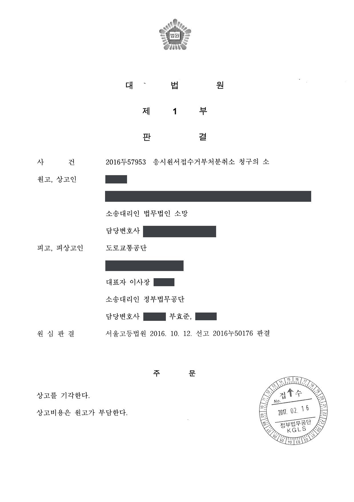
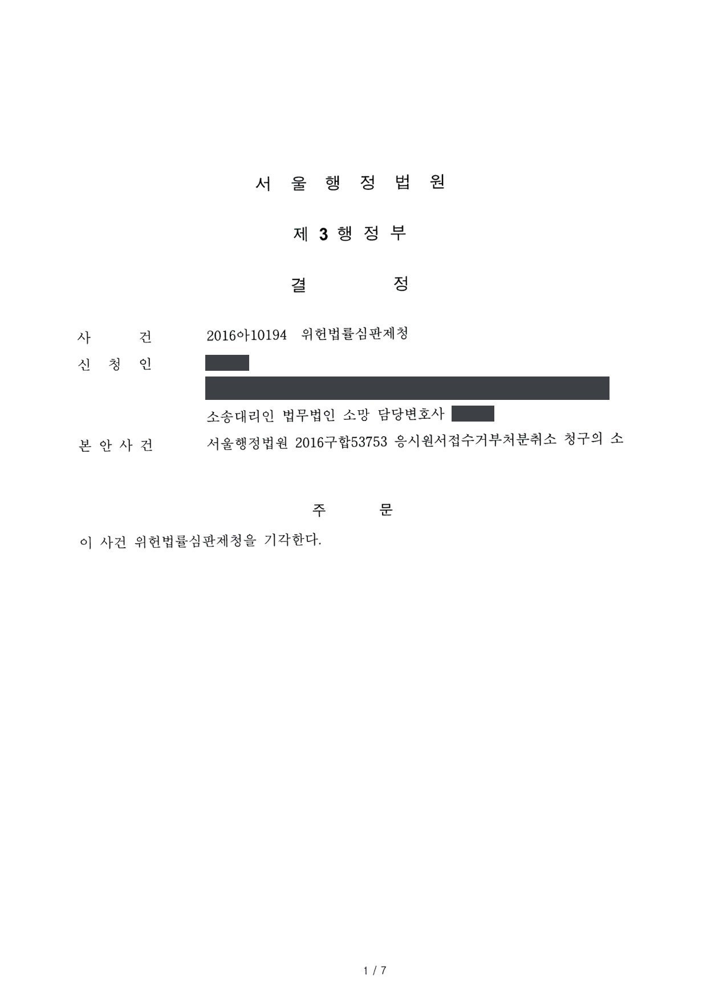

운전면허시험 응시원서접수 거부처분 취소소송 (1·2·3심, 위헌법률심판제청)
서울행정법원 2016구합53753 · 서울고등법원 2016누50176 · 대법원 2016두57953 · 서울행정법원 2016아10194 · 담당변호사 부효준
판결문




사건의 요지
운전면허 결격기간 중에 있는 원고의 운전면허시험 응시원서 접수를 거부한 행위가 항고소송의 대상인 처분에 해당하는지(신청권의 유무), 결격기간을 정한 「도로교통법」 제82조 제2항 제4호가 과잉금지원칙·평등원칙에 어긋나 직업의 자유 등을 침해하는지가 다투어진 사건입니다. 제1심·항소심·상고심과 제1심에서의 위헌법률심판제청신청 사건을 함께 수행했습니다.
사건의 주요 내용
원고는 2014년 교통사고를 낸 뒤 필요한 조치를 하지 않고 현장을 떠난 사실로 벌금형이 확정되고 운전면허가 취소된 사람입니다. 원고는 2015년 11월 운전면허시험 응시원서를 제출하였으나, 피고 공단(운전면허시험 관리기관)은 도로교통법 제82조 제2항 제4호가 정한 결격기간(면허취소일부터 4년)이 지나지 않았다는 이유로 접수를 거부하였습니다.
원고는 이 거부행위의 취소를 구하는 소송을 제기하면서, 결격기간을 정한 도로교통법 제82조 제2항 제4호가 헌법 제10조의 행복추구권을 침해하고 헌법 제11조의 평등원칙에 위배되어 위헌이라고 주장하고 제1심에서 위헌법률심판제청을 신청하였습니다. 부효준 변호사는 피고 공단을 대리하여 제1심·항소심·상고심과 위헌법률심판제청신청 사건을 수행하였습니다.
원고의 주장
- 도로교통법 제82조 제2항 제4호는 교통사고로 사망의 결과가 발생한 경우와 상해, 경미한 상해가 발생한 경우를 구분하지 않고 일률적으로 4년의 결격기간을 정하여 피해의 최소성에 어긋나므로 행복추구권을 침해한다고 주장하였습니다.
- 같은 범죄로 징역형을 받은 사람과 벌금형을 받은 사람은 위법성이 본질적으로 다른데도 결격기간을 동일하게 정한 것은 평등원칙에 위배되므로, 위헌인 조항에 근거한 거부행위도 위법하다고 주장하였습니다.
부효준 변호사의 주장
- 도로교통법 제82조 제2항 제4호, 제83조 제3항에 따라 원고는 법률상 당연히 운전면허시험에 응시할 수 없으므로, 응시원서 접수 거부는 그 사실을 알려 주는 사실행위에 불과하여 항고소송의 대상인 행정처분이 아니라고 본안전항변을 하였습니다.
- 결격기간 조항은 사고 후 구호조치를 하지 않은 운전자를 일정 기간 교통에서 배제하여 공공의 안전을 확보하고 그러한 행위를 억제하려는 정당한 목적을 가진 적절한 수단이며, 위반행위 유형별로 결격기간을 달리 정하고 벌금 미만의 형이나 선고유예 등의 경우에는 적용을 배제하여 개별 사안의 특수성을 고려할 여지를 두고 있으므로 과잉금지원칙과 평등원칙에 위배되지 않는다고 반박하였습니다.
법원의 판단
법원은 거부처분의 처분성에 관한 대법원 판례(2009. 9. 10. 선고 2007두20638 판결)에 따라, 운전면허를 취득하려는 일반 국민에게는 응시원서를 접수하여 달라고 요구할 신청권이 있고 실제로 접수할지는 본안에서 판단할 사항이므로 접수 거부는 항고소송의 대상이 되는 처분에 해당한다고 보아, 피고 공단의 본안전항변은 받아들이지 않았습니다.
그러나 본안에서는 결격기간 조항이 직업의 자유 또는 일반적 행동의 자유를 제한하지만, 사고 후 필요한 조치를 하지 않은 운전자를 4년간 교통에서 배제함으로써 공공의 안전을 확보하고 그러한 행위를 억제하려는 입법목적이 정당하고 수단도 적절하며, 결격기간을 위법행위 유형별로 1년부터 5년까지 달리 정하고 벌금 미만의 형·선고유예 등의 경우에는 적용을 배제하여 피해의 최소성과 법익의 균형성도 갖추었다고 보았습니다. 징역형과 벌금형을 받은 사람을 같게 취급한 것도 본질적으로 다른 집단을 같게 취급한 것이 아니어서 평등원칙에 위배되지 않는다고 하였습니다.
이에 따라 제1심은 2016년 6월 위헌법률심판제청신청을 기각하고 원고의 청구를 기각하였으며, 항소심은 2016년 10월 제1심 판단이 정당하다고 보아 항소를 기각하였고, 대법원은 2017년 2월 심리불속행으로 상고를 기각하여 그대로 확정되었습니다.
도로교통법 제80조 제1항, 제83조 제1항, 도로교통법 시행령 제43조 제2항에 따르면 자동차를 운전하려는 사람은 지방경찰청장으로부터 운전면허를 받아야 하고, 운전면허를 받으려면 도로에서 자동차를 운전할 능력이 있는지에 대한 운전면허시험을 거쳐야 하며, 운전면허시험을 거치려는 자는 피고 등에게 신청서를 제출해야 하는바, 이러한 관계 법규의 내용을 종합하여 볼 때, 운전면허를 취득하려는 일반 국민에게는 일응 피고 등에게 운전면허시험의 응시원서를 접수할 것을 요구할 수 있는 신청권이 있다고 봄이 상당하고, 피고가 그 신청을 받아들여 응시원서를 접수할 것인지 여부는 본안에서 판단할 사항으로 보이므로, 결국 이 사건 거부행위는 항고소송의 대상이 되는 처분에 해당한다고 봄이 상당하다.
서울행정법원 2016구합53753 판결 이유 '2. 본안전항변에 대한 판단 — 나. 판단' 부분
한편 원고는 이 사건 법률조항이 교통사고로 인하여 사망의 결과가 발생한 경우와 상해가 발생한 경우, 상해가 발생한 경우라도 경미한 상해가 발생한 경우를 구분하여 운전면허의 결격기간을 구분하지 아니하였으므로, 피해의 최소성이라는 관점에서 위헌이라고 주장하나, 어떠한 행위의 불법성은 결과불법과 행위불법의 정도를 종합적으로 고려하여 평가하여야 하므로, 반드시 운전면허의 결격기간을 사망이나 상해 등에 따른 결과불법의 정도만으로 구분하여야 한다고 보기 어렵고(예컨대 도주차량 범죄로 인하여 피해자가 사망하는 경우에도 범죄자에게 벌금형이 선고되는 경우가 있고 피해자가 상해만을 입었는데도 그에게 징역형의 실형이 선고되는 경우도 있다), 오히려 이 사건 법률조항은 행위불법까지 고려하여 벌금 이상의 형의 확정을 요건으로 하면서 개별사건을 담당하는 법원이 구체적 사안을 심리하여 이 사건 법률조항이 규정하는 법률효과를 발생시키는 것이 지나치게 가혹하다고 판단하여 선고유예의 판결을 선고하는 경우에는 그 적용을 배제하고 있는 이상, 이 사건 법률조항이 구체적 사안의 개별성과 특수성을 고려할 수 있는 가능성을 일체 배제하는 법률조항이라고 보기 어려우므로, 피해의 최소성도 도모하고 있다고 볼 것이다.
서울행정법원 2016구합53753 판결 이유 '3. 다. 1) 행복추구권의 침해 여부 — ③ 피해의 최소성' 부분
원고는 이 사건 법률조항이 도주차량 범죄로 징역형을 받은 자와 벌금형을 받은 자가 위법성의 측면에서 본질적으로 다름에도 불구하고 모두 운전면허 결격기간을 동일하게 규정하였으므로 평등원칙에 반한다고 주장하나, 앞서 본 바와 같이 이 사건 법률조항의 목적이 운전자의 기본적인 의무를 위반하여 국민의 생명ㆍ신체ㆍ재산에 대하여 위험을 초래한 자에게 계속하여 교통에 관여하는 것을 금지하여 공공의 안전을 확보하는 한편, 그와 같은 행위를 억제하도록 하는 예방적 효과를 달성하고자 하는 것에 있다는 측면에서 보면, 이 사건 법률조항의 적용에 있어 도주차량 범죄로 징역형을 받은 자와 벌금형을 받은 자가 본질적으로 다른 자라고 볼 수 없으므로, 이 사건 법률조항이 평등원칙에 반한다고 볼 수도 없다.
서울행정법원 2016구합53753 판결 이유 '3. 다. 2) 평등원칙 위배 여부' 부분
※ 판결 이유 가운데 이 사건의 판단 기준이 된 부분을 그대로 옮긴 것으로, 당사자 이름 등은 가렸습니다.
이 사건이 보여 주는 것
운전면허 결격기간 중에 있는 사람의 응시원서 접수를 거부한 행위에 대하여, 법원은 '법률상 당연한 결과를 알려 준 사실행위'라는 피고 공단의 항변을 받아들이지 않고 신청권을 인정하여 처분성을 긍정하였습니다. 거부처분의 처분성은 신청인이 누구인지가 아니라 관계 법규가 일반 국민에게 신청권을 인정하는지에 따라 추상적으로 판단되므로, 면허시험 업무를 맡은 기관은 접수 거부도 항고소송으로 다투어질 수 있다는 점을 염두에 두어야 합니다.
한편 결격기간 조항의 위헌 주장에 대하여는, 결격기간을 위반행위 유형별로 달리 정하고 벌금 미만의 형·선고유예 등에는 적용을 배제한 법 체계 전체가 피해의 최소성과 평등원칙 판단의 근거가 되었습니다. 결격사유 조항의 위헌을 다투려면 법원이 선고형을 통해 개별 사안을 고려할 수 있는 구조까지 넘어서는 과잉이 있음을 보여야 합니다.
비슷한 처분을 받으셨다면
행정처분은 처분이 있음을 안 날부터 90일 이내에 행정심판이나 취소소송으로 다투어야 하고, 기간이 지나면 돌이킬 수 없는 처분은 집행정지를 서둘러야 합니다. 처분서를 받은 날짜부터 확인해 드립니다.